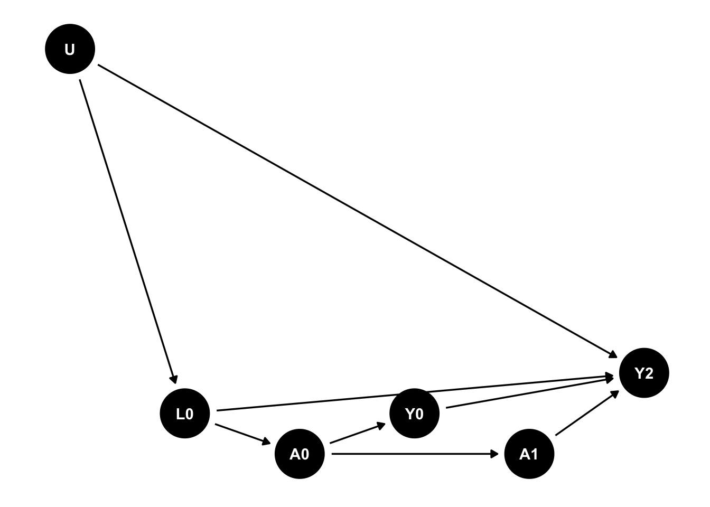

library(ggdag)
Attaching package: 'ggdag'The following object is masked from 'package:stats':
filterlibrary(dplyr)
Attaching package: 'dplyr'The following objects are masked from 'package:stats':
filter, lagThe following objects are masked from 'package:base':
intersect, setdiff, setequal, unioncoords <- read.table(header = TRUE, text = "
x y name
0 1 U
1 .1 L0
2 0 A0
3 0.1 Y0
4 0 A1
5 0.2 Y2
")
d <- dagify(
A0 ~ L0,
A1 ~ A0,
L0 ~ U,
Y0 ~ A0,
Y2 ~ A1 + L0,
Y2 ~ U + Y0,
coords = coords)
ggdag(d) +
theme_dag()